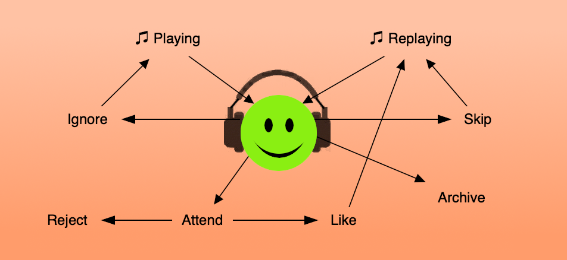
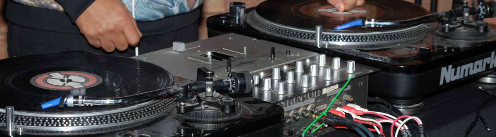

As a music listener, you've got options. Anytime you are less than happy with your current life soundtrack, check the actions available to you. Use your freedom of choice.

What you are doing: Basically discovering. Maybe you heard the song before but didn't react to it.
Your choices: You have many playing sources available, and you can utilize as many as you want anytime you want: streaming services, social media recommendations, curated collections, live performances, DJ shows, music marketplaces, record stores, new release feeds, reviews and whatever else you find.
What you are doing: Your non-conscious is gaining familiarity with the sound while your conscious is doing other things. Maybe you'll hear this music again sometime, but this time your mind was elsewhere. Probably with good reason.
Your choices: How much you want to consciously attend or allow your unconscious to wake your conscious.
What you are doing: Your conscious attention is active and you are reacting to what you are hearing. You might become curious about the artist, the album, context of the music, or endorsements by others. Maybe you are considering how this music matches your identity, group affiliation, life context or mood. Possibly some aspect of the music structure, texture, skill, focus, effort, intent, originality, or other feature is remarkable. Probably some combination.
Your choices: How you want to continue to engage. Your conscious might decide this was a false wakeup alarm, otherwise you are choosing if you want to hear this song again.
What you are doing: Avoiding hearing this drag song again.
Your choices: If you can easily do something to avoid hearing the song again, it's worth it. Even before the flood of AI generated music, there was already more recorded music in existence than anyone could listen to in one lifetime.
What you are doing: Taking action to hear this song again sometime in the future.
Your choices: Tap "like" (if available), bookmark or make a note if not. Consider digital download (if affordable/possible, especially if it might disappear). Maybe buy a physical copy (if affordable/possible/desirable).
What you are doing: Hearing a song again. Either from the same source where you discovered it, or from a different source.
Your choices: How often you would like to hear the song. Playback frequency is the difference between enjoying hearing a good song again, and being slightly bored. The song is still good, just change how often it plays.
What you are doing: Indicating you want this song to play less frequently. If you are skipping due to mood mismatch, select something else instead.
Your choices: Something along the lines of at most once a week, once a month, quarterly, yearly.
What you are doing: Not playing this song again, while maintaining a personal reference.
Your choices: Tap "archive" if available. Consider an archival reference bookmark. Maybe sell your physical copy.

Knowing what you are doing gets you the max from what you have to work with. That's all about you. When you find something amazingly fantastic, shout out why you connected with it and what it means to you. That's about community and shared culture.
The music world really needs action listeners now.
This article is intended as a quick reference note anytime your music listening life is less than awesome. I'll be referencing this myself. HTH.